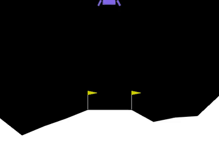
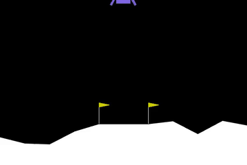
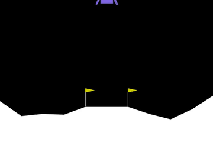

🚀 Rocket-kun results explorer
A lunar lander learns to land with PPO. One reward rule is gameable, one is its fix, and one setup copies a teacher first. Every number is the raw game score over 100 fresh flights. Code and write-up on GitHub.
Bars are the mean. Dots are the individual seeds. Whiskers (score only) are the typical flight-to-flight spread, ±1 standard deviation. Hover or tab to a bar for details.
See the flights

crashes in 1.5 s

seed 2 never lands (first 14 s shown)

lands in 224 frames (4.5 s)
Every model
| Setup | Seed | Score | Spread (±1 sd) | Reached 200 | Frames |
|---|
How to read this
Each setup was trained with 3 seeds (the time fee, the crash penalty and the autopilot have fewer). Models are scored with my reward wrapper switched off, deterministic actions, 100 fresh flights each. 200 points is Gymnasium's "solved" bar and 1000 frames is the episode limit. Three seeds is a small sample and re-scoring moves a mean by about 5 points, so treat small gaps as noise. The teacher-trained setup also got extra compute and data. More caveats are in the README.